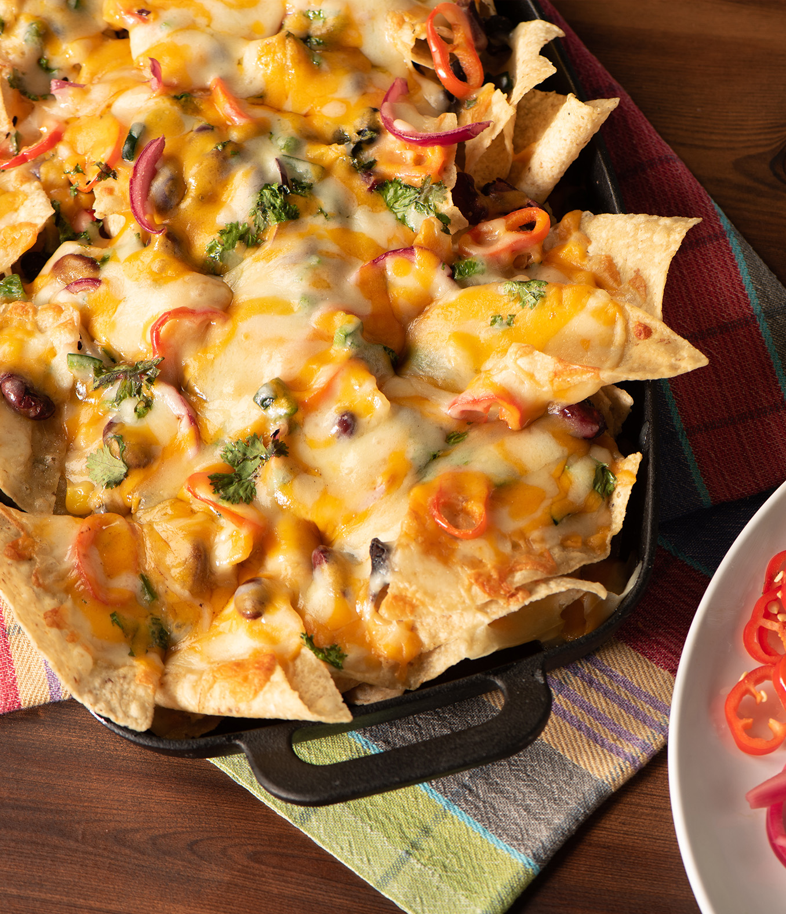

Nachos

Description
Nachos are great. I love nachos. One of the greatest things about nachos is that although there probably is a wrong way to make them,
if you decide you don't care what other people think you can do whatever you think.
For example, I once had a flatmate from france who really liked cooking and tried to tell me that chucking some cheese on top of a plate of tortilla
chips and throwing it in the microwave didn't count as cooking. He can piss off, I was hungover and it was declicious.
Ingredients
- Tortilla chips - as many as you want depending on how hungry you are/if you're being forced to share. Just use the whole bag, I won't tell.
- Cheese (lots)- I use cheddar, but I guess you can do what you want here, as long as it's something that will melt. Gouda maybe? See what you've got lurking in your fridge.
- Optional other stuff and toppings
- Spring onions ("scallions")/red onion, sliced or diced, whatever you want really (I like onions, ok?)
- Jalapeno, sliced. I know the n should have a tilde over it, but my German keyboard doesn't want to do that right now.
- Coriander ("cilantro"), because it's delicious
- Guacamole
- Sour cream
- Chili con carne, but you'll have to find a recipe for that somewhere else
- Anything else you can think of or find that sounds good. I don't know what's in your fridge.